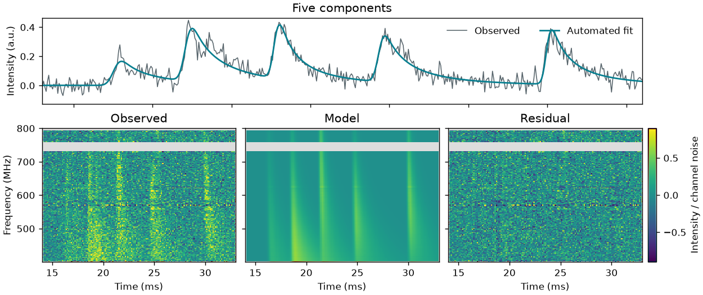
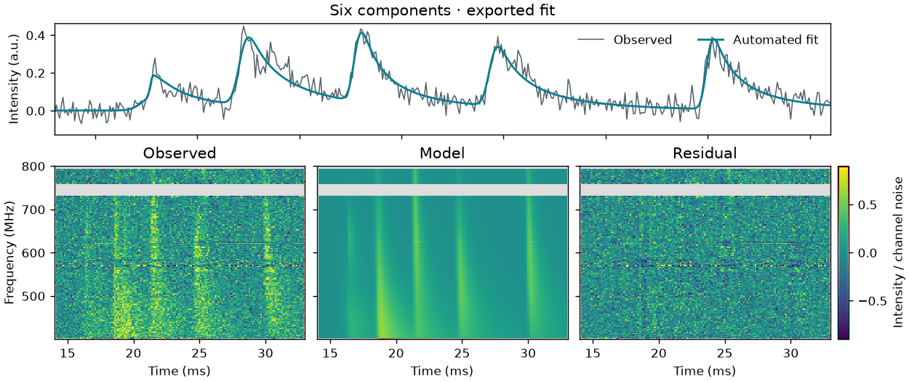

Burst Surveyor v0.2.0 started with three detected peaks on the observation's shared time grid and exported a six-component fit. Select a stage to see how the residual guided the search.
The top panel overlays the observed and fitted pulse profiles. The bottom panels show the observed spectrum, the model, and the residual (observation minus model). All stages use the same time window and intensity scales. Gray bands mark masked channels.
Gain measures the reduction in channel-noise-weighted squared error relative to a constant baseline in each channel. The stages are scored on the same usable pixels.
The initial search found peaks near 18.7, 21.6, and 30.1 ms. The three-component fit with scattering reached a gain of 6,928. The residual still shows a peak near 24.7 ms.The 24.7 ms residual peak supplied a starting time for a fourth component. Refitting all four together removed most of that feature from the residual and raised the gain to 8,561. The earlier feature near 16.3 ms remained.

A later residual search added a fifth component near 16.3 ms. The joint refit raised the gain to 9,176.

The selected fit describes the early feature with two overlapping components that have different spectra. Their fitted arrival times at 600 MHz are 16.19 and 16.36 ms. The split raised the gain to 9,229. The number of physical pulses remains uncertain.